| 『線は、僕を描く』を良く知るために | |
| 砥上裕將 | |
| 講談社 (2019) | |
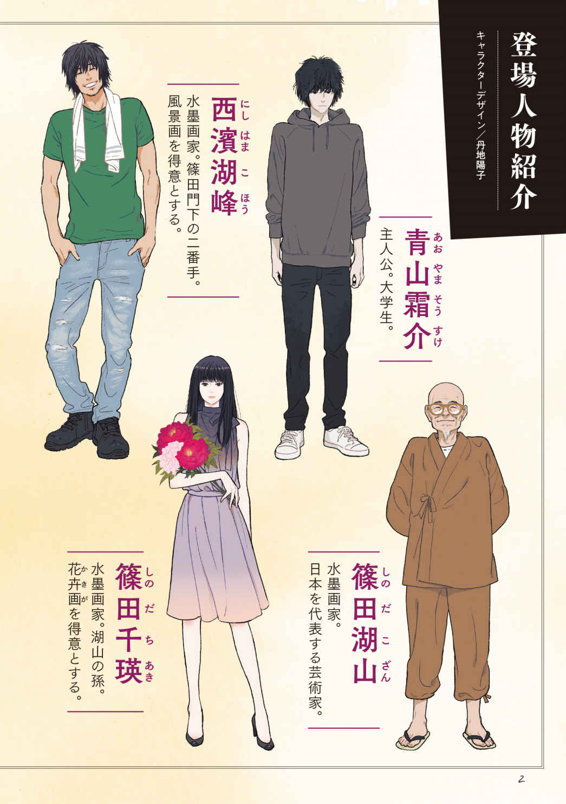
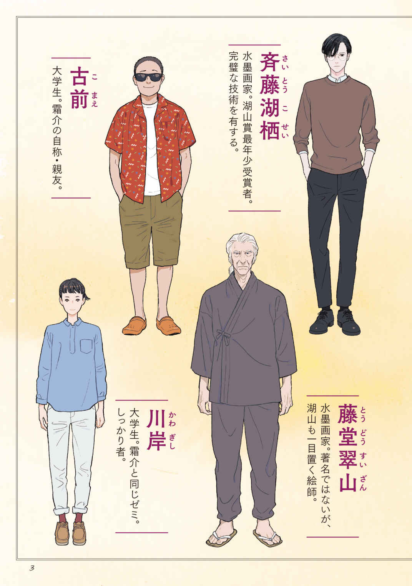
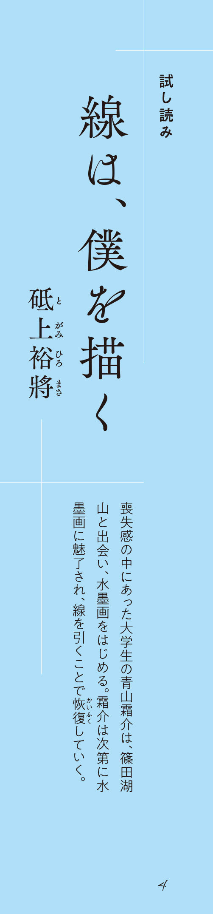
二回目の練習は、翌週の週末だった。今回も湖山先生の部屋で相対し、お茶が出された。お茶を出しに来た男性は、西濱さんとは対照的に色白で背が高く瘦せていた。無表情だが、キラリと光るメガネと鋭い目は、彼がかなりの切れ者であることを物語り、細い顎に長い前髪が、繊細な人 柄 も感じさせた。肩幅が狭く、それが余計に彼を細身に見せていたが、背筋のしっかりと伸びた隙のない佇 まいが印象的だ。芯の強い人なのだとそれだけで分かる。まるで浮ついたところのない落ち着いた様子も、西濱さんとは対照的だった。西濱さんには作業着が似合うけれど、この人にはスーツが似合いそうだなと反射的に思った。僕はなぜだかふと芥 川 龍 之 介 の写真を思い出したけれど、芥川龍之介よりもその男性の方が遥かに美男子だった。
「ああ、斉藤君だよ。西濱君より後に入ってきた私の弟子で、西濱君ともども今は教室を任せている。斉藤君、こちらはこの前話した青山君だよ」
この人も先生クラスの人なのだ。斉藤さんは、何かの儀式のようにかしこまってこちらに座り、両手をついて頭を下げた。
「斉藤湖 栖 です。どうぞよろしくお願いします」
そう言って視線を上げると、鼻 梁 にかかる良く出来た陰影の傍にある二つの目が、レンズ越しに、こちらを眺めていた。目を合わせれば吸い込まれそうな、静かな瞳だった。僕を見ているはずなのだけれど、僕の何を見ているのかよく分からない。怖くはないがすごく遠い、そんな気持ちを抱いてしまう。この人はまるで水のようだ、と思った時に、誰かにそんな印象を感じたことなど一度もないことに気が付いた。この人も、西濱さんや湖山先生に通じる不思議な雰囲気のある人だと思った。
「斉藤君は、最年少で湖山賞を受賞した俊英だよ。若いが技術に関しては国内でも文句を付ける人間は誰もいないだろう。青山君も彼の水墨画から学ぶところが多いと思うよ」
そう言われると斉藤さんは、もう一度、頭を下げた。僕は慌てて、モゴモゴと名前を名乗った。斉藤さんは、僕の声を聞き届けると、そのあと頭を綺麗にあげた。少しの間だけ、僕を見ていて、わずかに目を細めた。それからすぐにお盆を持って出ていってしまった。
湖山先生と目が合うと、先生は少しだけ微笑んだ。
「斉藤君は、人付き合いはちょっと不器用だけれど、優しい人だから安心していいよ。何か困ったことがあったら、西濱君ともども頼ってくれていいからね」
「あ、ありがとうございます。花がとても似合いそうな男性ですね」
「はは。そうかも知れないね。確かに彼は花 卉 画 は得意だ。いつか機会があれば彼の技法を見てみるといいよ。さて、では今日は、いよいよ基本をやってみようか。やる気はあるかな？」
「大丈夫です。がんばります」
そう言うと湖山先生は笑った。今日は、僕の前にだけ道具が置いてあった。
白い下敷きに、硯に、水の入った容器、棒状の墨、一本の筆に、内側に仕切りの付いた丸味を持った花形の陶器のお皿、最後に布巾だ。
「下敷きは白いものを使う。これは紙を敷いたときに墨の濃淡がはっきりと分かるからだ。水墨画というのは、墨を水で薄めて使ってさまざまな変化を出していく。その変化をなるべく見やすくするための工夫だ。次にその仕切りの付いたお皿は梅 皿 という。形も梅の花のようだろう？ パレットだと思えばいい。絵を描く人間ならお馴 染 みの道具だが、描かない人はあまり見たことがないだろう。水を張った容器を筆 洗 という。そして、あとは硯に、筆に、墨。墨は固形墨を使う」
「墨 液 ではないんですね。本格的な感じがします」
「墨液を使って教えることもあるが、私はあまり好きではない。それに良い硯に墨液を注ぐなんてもったいないよ」
「これは良い硯なのですか？」
「ああ、とても。使いこなせれば、この世界と同じほど微細な墨がすれる」
僕はびっくりして硯をまじまじと見た。掌よりも少し大きいくらいの何てこともない長方形の硯に見えたが、確かに立派な木箱に入っていて蓋もついている。良いものだと言われると、なんとなく良いものだという気がしてしまうから不思議だ。ただの石だが石以上のものに感じる。
「硯は、書家や水墨を描く絵師にとっては、刀みたいなものだよ。そこからすべてが始まるんだからね」
「そんな大事なものを使わせていただいて、いいんですか？」
「大丈夫。大丈夫。手に入るのなら道具は良いものを使わないとね。良い硯だから大事にしてあげてね」
「分かりました。大事に使わせてもらいます」
嬉しそうに湖山先生は微笑んだ。湖山先生自身も道具にたくさんのこだわりがあるのだろう。超一流の絵師なら当然のことなのだろうけれど、その当然の言葉でも本人から聞くと嬉しい。
「では、まずは墨をするところから。これがなければ始まらないからね。おっと、水 滴 がなかったね」
湖山先生は立ち上がって、後ろの道具箱から、小さな急 須 のような容器を取り出してきた。そこに水が入っているらしい。湖山先生の皺皺の手が、硯に水を注いで、硯の面を濡 らした。
「さあどうぞ」
と、湖山先生は墨をするように促 した。僕は恐る恐る墨を持って、硯の上でゴシゴシとすり始めた。おもしろいくらいに墨はすれて、透明な水は真っ黒になっていった。
しばらくすっていると粘 りが出てきて、あとどれくらいすればいいのだろう、と視線を上げると湖山先生は居眠りをしていた。
確かに退屈だろうけれど、居眠りしなくても、とも思ったが、とりあえず湖山先生を起こすと、
「もうできたかね？」
と、私はまるで居眠りなんかしてなかったぞというような顔で、起き上がった。それから、僕の座っている席のほうへやってきた。僕は背筋がぐっと伸びた。
着ている作務衣から漂う清潔そうなにおいは何なのだろう、と思っていると、湖山先生は無造作に筆を取って、目の前の紙に何かをバシャバシャと描き始めた。
この前と同じ、湖畔の風景が出来上がり、次に紙を置くと渓谷が出来上がり、最後には、竹が出来上がった。どれもまさしく神 業 で、一瞬の出来事だった。どうしてこんな速度で、こんなに高齢な老人が筆を操れるのだろう？ 年齢を感じさせない若々しい動きだった。そして何より速い。動きの細部についてはあまりに速すぎて分からない。手に持った筆が、先日と同じく、硯と梅皿と布巾と筆洗の間を回転しているということしか分からなかった。
気づくと墨はなくなり、硯の中身は空っぽになっていた。描かれた絵は床に広がっていた。そして湖山先生は衝撃的な一言を、僕に告げた。
「もう一回。もう一回、墨をすって」
僕は啞 然 としながらも、また一から墨をすり、湖山先生はうたた寝を始めた。
何が起こったのだろう？ 何か、気に障 ることをしてしまったのだろうか？
いろいろと思案しながら、惑いつつ墨をゴシゴシすり、これでいいだろうというところでまた湖山先生を起こした。
特別に機嫌が悪そうでもなく、かといって良さそうでもなく、また筆を取ると一 気 呵 成 にバサバサと描き上げて、硯の中身を空っぽにした。それからまた、さっきと同じせりふがかえってきた。
「もう一回」
僕は眉をひそめて、いったい何が起こっているのだろう？ と墨をすりながら考え続けた。
僕はとにかく墨をすり、湖山先生を呼んだ。湖山先生は居眠りから目覚めて、描いて、僕はまた同じ言葉をもらい、また墨をすり......と、そんなことを何度か繰 り返した。もういい加減疲れてきたので、いろいろ考えるのをやめて、ただなんとなく手を動かし、有 り体 に言えば適当に墨をすって湖山先生を呼んだ。すると湖山先生は最初のときとまったく同じく、特に不機嫌でもなく不愉快でもなさそうな顔で、筆を取ると、
「筆洗の水を換えてきて」
と、言った。僕は言われたとおり廊 下 に出てすぐの場所にある流し場で、筆洗の水を新しいものに換えた。湖山先生の前に真新しい水を置いて席に着くと、湖山先生は待ち構えていたように筆を取って、墨を付けて筆洗に浸した。その瞬間、湖山先生は口を開いた。
「これでいい。描き始めよう」
僕は湖山先生が何を言っているのか、分からなかった。どうしてまじめにすった墨が悪くて、適当にすった墨がいいんだ？
僕はなんとも腑に落ちないという表情をしていたのだろう。湖山先生はにこやかに笑って答えた。
「粒子だよ。墨の粒子が違うんだ。君の心や気分が墨に反映しているんだ。見ていなさい」
湖山先生は、筆をもう一度取り上げて、いちばん最初に描いた風景とまったく同じものを描いた。木 立 が前面にあり、背後に湖面が広がり、さらにその背後に山が広がっているという絵で、レイアウトはまったく同じだ。
だが湖山先生が筆を置いた瞬間の墨の広がりや、きらめきが何もかも違った。
画素数の低い絵と高い絵の違いと言ったらいいのだろうか。実際に粒子が違うというのなら、そういうことなのだろう。小さなきらめきや広がりが積み重なり、一枚の風景が出来上がったとき、最初に見たときは漠然と美しいとしか感じられなかった絵が、二枚目になると懐かしさや静けさやその場所の温度や季節までも感じさせるような気がした。細かい粒子によって出来上がった湖面の反射は、夏の光を思わせた。薄墨で描かれた線のかすれが、ごく繊細な場所まで見て取れるので、眩 しさや、色合いまでも思わせ、波打つ様子は静けさまでも感じさせた。その決定的な一線は、たった一筆によって引かれたものだった。同じ人物が同じ道具で、同じように絵を描いても、墨のすり方一つでこれほどまでに違うものなのかと、僕は愕 然 とした。とたんに僕は恥ずかしくなった。
僕はとんでもない失敗をさっきまで繰り返していたのだ。湖山先生は相変わらず、にこやかに笑っている。
私が何も言わなかったのが悪いが、と前置きした後に湖山先生は言った。
「青山君、力を抜きなさい」
静かな口調だった。
「力を入れるのは誰にだってできる、それこそ初めて筆を持った初心者にだってできる。それはどういうことかというと、凄くまじめだということだ。本当は力を抜くことこそ技術なんだ」
力を抜くことが技術？ そんな言葉は聞いたことがなかった。僕は分からなくなって、
「まじめというのは、よくないことですか？」
と訊ねた。湖山先生はおもしろい冗談を聞いたときのように笑った。
「いや、まじめというのはね、悪くないけれど、少なくとも自然じゃない」
「自然じゃない」
「そう。自然じゃない。我々はいやしくも水墨をこれから描こうとするものだ。水墨は、墨の濃淡、潤 渇 、肥 瘦 、階調でもって森 羅 万 象 を描き出そうとする試みのことだ。その我々が自然というものを理解しようとしなくて、どうやって絵を描けるだろう？ 心はまず指先に表れるんだよ」
僕は自分の指先を見た。心が指先に表れるなんて考えたこともなかった。それが墨に伝わって粒子が変化したというのだろうか。だが、たしかにその心の変化を墨のすり方だけで見せつけられた身としては、うなずくしかない。
「君はとてもまじめな青年なのだろう。君は気づいていないかもしれないが、真っすぐな人間でもある。困難なことに立ち向かい、それを解決しようと努力を重ねる人間だろう。その分、自分自身の過ちにもたくさん傷つくのだろう。私はそんな気がするよ。そしていつの間にか、自分独りで何かを行おうとして心を深く閉ざしている。その強 張 りや硬さが、所 作 に現れている。そうなるとその真っすぐさは、君らしくなくなる。真っすぐさや強さが、それ以外を受け付けなくなってしまう。でもね、いいかい、青山君。水墨画は孤独な絵画ではない。水墨画は自然に心を重ねていく絵画だ」
僕は視線を上げた。
言葉の意味を理解するには、湖山先生の声があまりにも優しすぎて、何を言ったのか、うまく聞き取れなかった。不思議そうな顔で、僕は湖山先生を見ていたのだろう。湖山先生は言葉を繰り返した。
「いいかい。水墨を描くということは、独りであるということとは無縁の場所にいるということなんだ。水墨を描くということは、自然との繫がりを見つめ、学び、その中に分かちがたく結びついている自分を感じていくことだ。その繫がりが与えてくれるものを感じることだ。その繫がりといっしょになって絵を描くことだ」
「繫がりといっしょに描く」
僕は言葉を繰り返した。僕にはその繫がりを隔てているガラスの部屋の壁が見えていた。その壁の向こう側の景色を、僕は眺めようとしていた。
その向こう側にいま、湖山先生が立っていた。
「そのためには、まず、心を自然にしないと」
そう言って、また湖山先生は微笑んだ。湖山先生が優しく筆を置く音が、耳に残った。その日の講義は、ただそれだけで終わった。
何か、とても重要なことを惜しみなく与えられているようで、そのすぐ前を簡単に通り過ぎてしまいそうになっている自分を感じていた。
小さな部屋に満たされた墨の香りと、湖山先生の穏やかな印象が、カチコチに固まっていた水墨画のイメージをボロボロと打ち壊していくのが分かった。
父と母が亡くなって以来、誰かとこんなふうに長い時間、穏やかな気持ちで向き合ったことがなかったのだと僕は気づいた。
一礼して部屋を出るときに、湖山先生が描いたお手本をすべて持って帰っていいと言われたので、僕は湖山先生の描いた紙の束 を一 抱 え持って、離れにある湖山先生のアトリエから敷地内の教室のほうへ移動した。玄関は教室の先にあり、教室に西濱さんがいれば車で送ってもらえるからだ。
湖山先生の自宅はそのまま教室とアトリエをすっぽりと抱えていて、おまけに広く整った庭まである。庭には水墨の画題になる植物がたくさん植えられているらしい。
教室には無数の道具と机といすが並べられていて、机は大作を描くことも可能な横長で広い面積もある。この教室で練習できるのは、内弟子とそれに準ずる実力のある湖山門下の数人の門人だけらしい。つまりほとんど、西濱さんや斉藤さん専用の教室で、当然そこには千瑛も含まれることになる。この前、展覧会で会ったときの強気な態度が思い返されて、教室で出くわさなければいいな、と思ったところで、案の定、千瑛に鉢合わせした。
千瑛は、ただひたすら立ったままテーブルの上の白紙に向かい練習していた。
今日は和服ではなく、真っ黒なワンピースだった。僕が教室に入ってもまるで気づかず、一心不乱に筆を振るっている。
細く長く白い腕に、長い指先、その特別な指に摘ままれた筆は、まるで白 鷺 の足のように奇妙な優雅さをたたえていた。しかし、その筆は、千瑛の手には余るほど長く大きい。それなりの重さがあるはずだが、千瑛はものともせずに見えないものを斬 るように筆を動かしていく。
立ったまま掛け軸のような長い画面を描いているのだが、筆の速さは湖山先生を思わせた。湖山先生よりも少しだけ遅いが、息遣いや描く雰囲気が確かによく似ている。
白い画面の中に大輪の花が次々に描かれ、真っ白な空間が美しく飾られていく。絶頂という言葉があるが、千瑛の描く花はまさしくそれだった。花の盛りを迎えた豪華な花が人の手によって次々に描き込まれ、花の洋服のように鋭い葉が余白に着せられていくと画面はほとんど埋め尽くされて、絢 爛 としか言いようのない花や葉の墨調の変化に眩しささえ覚える。
最後に茎を描き、全体に点を打ち、数手、手を入れると千瑛はようやく筆を置いた。
繊細な動きや細かな動作には向かないような大きな筆一本だけで、限りなく細やかに細部に向かって穂先を動かしていく様子は、一流のバイオリニストの弓さばきを思わせた。体幹をあんなふうに小刻みに揺らして身体全体を使って適切な力が伝わるポイントを探していく。
千瑛の動きや、湖山先生の動きを見ていると、水墨画というのは武術や楽器の演奏のような動きだなと思ってしまう。身体全体が筆と化して、優れた一筆のために整えられている。描き終わって、集中力が薄れ、千瑛がぼんやりと物 憂 げに絵を眺めているときに、ようやくこちらに気が付いた。
すごい、とほめ称えようとしたところで、彼女は拒絶するように、
「こんにちは」
と、言った。僕はその声のトーンに言葉を搔 き消 されて、同じように冷静にこんにちは、と言った。
「本当に、来ていたのね」
「ええ。お世話になっています」
それだけ言うと千瑛は描き上げた紙を横において、新しい紙を下敷きの上に敷いた。そしてまた無造作に何かを描き始めた。見ていると竹のようだった。鋭い直線が剣で空間を斬るように次々に描かれていくが、どこかゆったりと描いている。先ほどの絵のような鬼気迫る様子はない。
身構えて次の言葉を待っていると、千瑛は意外にも、
「この前は、感情的になってしまって申し訳なかったわ」
と言った。ごめんなさい、という言葉を使わないところが彼女らしいな、と思った。彼女の手はただひたすら紙面の上を斬って動き続けている。
彼女は僕の言葉を待っているのだろうか。
待っているともいえるし、待っていないともいえる。彼女が筆を止めたタイミングを見計らって僕は、
「いえ、なんでもないことです。僕があなたでも、同じ反応をするかもしれない」
と言葉を繫いだ。彼女はようやく視線を上げて、
「そう」
と呟いてまた絵を描き始めた。教室の中ではただ、千瑛が筆を振るう音が響いている。紙と筆が擦れ、画面の上に命が吹き込まれていく音だ。
「今日は何を習ったの？」
千瑛は描きながら僕に訊ねた。髪が動きに合わせて微 かに揺れて光っている。漆黒の髪は鏡のように夕方の光を反射する。
「墨のすり方と、力を抜くこと、それだけです」
「それだけ？」
「ええ。それだけです」
千瑛は少しの間だけ考え込んだ。
「そうなの......意外だったわ。お祖父ちゃんの考えていることは、やっぱり分からないわね。お祖父ちゃんらしいといえば、らしいけど......」
そして千瑛はまた下を向いたまま少しの間、筆を止めた。それから、ゆっくりと筆を置いて、こちらを見た。
「この前、勝負だと言ったけれど......」
「ええ」
「常識的に考えて、あなたは私に勝てないわ」
「そうでしょうね」
それは間違いない。それは始める前から分かっていることだ。いま目の当たりにした技術を見ても、どうひっくり返っても一年では千瑛のいる場所には及ばない。誰が見ても明らかなことだ。
「私は来年の湖山賞公募展で、大賞の湖山賞を狙 ってる。それを獲れば、通例ではお祖父ちゃんが雅号を付けてくれて、プロの作家として認められる。私はその場所を狙っているの。だから、私に勝つということは、あなたが画歴一年足らずで、水墨画家にとっての最大のタイトルの一つである湖山賞を獲るということなの。それはどう考えても無理だと思う。十年練習したって入選すらしない生徒さんもたくさんいるわ」
「まあ、そうでしょうね。僕もまったくあなたに勝てるとは思えないから」
「あなたはそれでも水墨をするの？」
それは、なぜ水墨を始めるのか、という問いそのもののような気がした。
練習の結果も、勝負の行方もすべて分かっている。それでも水墨を始めるのか、という問いだ。
僕は逡 巡 することもなくうなずいた。
「もちろん、やってみようと思いますよ。理由は、うまく言葉にできないけど......僕はたぶん水墨を好きになると思います」
千瑛は不思議そうなものを見る目でこちらをじっと見ていた。
「まだ、何の画題も描いていないのに？」
確かにそうだ。僕が習ったことといえば、落書きをすることと、力を抜いて墨をすることだけだ。だがそれでもこれまでの僕では思いつきもしなかったことを知ることができた。
「ええ、たぶん」
と、うなずいて見せると、千瑛はほんの少しだけ笑った。考えてみれば、いったい僕に何ができるというのだろう？
この世界で僕に期待している人間は、古前君と湖山先生のたった二人しかいない。
古前君のほうはただの勘違いだという気がするけれど、湖山先生が僕をこの世界に引き込んだのだからこちらには理由があるはずだ。だがその理由はまったく分からない。
僕と千瑛はたぶん同じ問いを抱えているのだ。僕自身が何者なのかをお互いが探していた。僕らは見つめ合ったまま沈黙していた。そのまま何度か呼吸した後、その沈黙のこっけいさに気づいて僕は口を開いた。
「凄い絵ですね」
僕はさっき描かれた牡 丹 の絵を見た。千瑛はすぐに首を振った。
「いいえ。たいしたことないわ。難しい画題だし、まだまだ細かいミスがたくさんある」
「そうなのですか？ 僕には分からないけれど」
「あなたは何も知らないから分からないだけよ。致命的とは言わないまでも、確かなミスがいくつもあるわ」
どうやら謙 遜 でもなんでもないようだ。僕がこの絵から感じていたのは、そういう細かなミスというよりも画面があまりにも華やかすぎるということだった。落ち着かないほど豪華で、パッと見た瞬間の驚きの向こう側に入っていけない。だがそんなことを、口にするとまた怒られそうだったので、僕は黙って絵を見つめていた。すると、彼女は、
「何かが足りない」
と言った。
僕は彼女を見た。彼女にも分かっているのだ、分かってはいるけれど、それが何なのかを摑むことができない。僕はガラスの向こう側の景色を透かし見るように、絵の中の彼女の気持ちを眺めることができた。
彼女の牡丹は、その壮麗な技術の中で際立って華やかに咲いている。その技の完成を求める心や向上心が熱意になって、花そのものの燃えるような情感を浮き立たせている。だが、一方でその情熱が、彼女の絵の中にある余白や、湖山先生が言っていた『自然』な心の変化や情感を消し去ってしまっている。たった一色にしか見えなくなるのだ。
それでも彼女の熱意の大きさは、見るものを圧倒する。
僕も彼女の絵を見ていると、何かが自分に決定的に欠けていることに気づいてしまう。それが何なのか分からずに、彼女の絵の中にそれを探してしまう。彼女の熱が胸に伝わってくるのだ。
自分の絵を見ている彼女は、とても真剣だった。
何かを伝えたいと思ったけれど、僕には選ぶべき言葉がなかった。伝えようと思いついた言葉は、どれも適当なものではなかった。
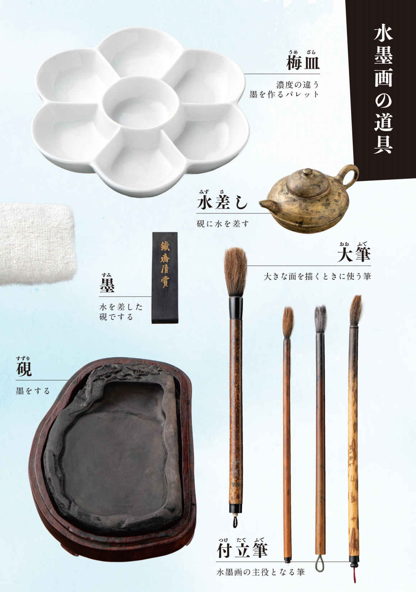
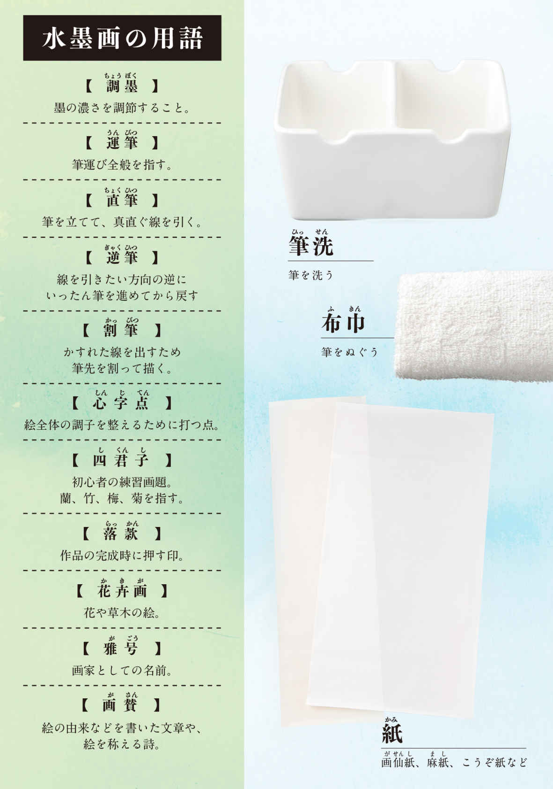
まるで一幅の水墨画が描かれていく、その過程を目の当たりにした気がした。
大学生の青山霜介は、高校時代に両親を事故で突然亡くして以来、カラッポで無気力な日々を送っていた。そんなある日、展覧会設営のバイトがきっかけで、日本を代表する高名な絵師・篠田湖山と知り合う。展示された水墨画に対する霜介の感想を聞いた湖山は、彼を弟子にすると宣言。絵画などまったく興味も経験もなかった霜介だったが、次第に水墨画の世界に惹かれていく──。
まず目を引くのが、水墨画とはどんなもので、どのように習得するのかという情報の興味深さだ。素人 の主人公が一から学んでいくという設定なので、読者にとっても入りやすい。しかもそれが決して〈説明〉ではなく、時には師の言葉として、時には実演場面を通して、また時には練習中の霜介の思考に重ねて伝えられるため、読者は霜介と一緒に驚いたり戸惑ったり感動したりしながら、少しずつ水墨画に馴染んでいけるよう工夫されている。その工夫を工夫と思わせない自然なストーリーテリングが素晴らしい。
おかげで、水墨画の新鮮さと奥深さに一気に魅入られた。「墨の濃淡、潤 渇 、肥 瘦 、階調でもって森 羅 万 象 を描き出そうとする試み」という壮大にしてシンプルな説明に心揺さぶられ、「一度描かれたものを消すことも、描き直すこともできない」という言葉に、美術の教科書で見たあの幽玄な山水もあの迫力の龍も一発勝負の産物なのかと衝撃を受けた。その一方で、繰り返し描く、できるまで描く、何かを摑むまで何度でも描くという修業の様子に圧倒された。風景画と花 卉 画 で異なる技術。絵師それぞれの個性。四 君 子 と呼ばれる基本画題。本書を読み終わるや否や、水墨画を実際に見てみたい、と走り出したい気持ちになったほどだ。
それだけでも充分すごいのだが、決して本書は水墨画自体がテーマなのではない。虚無を抱えていた霜介が徐々に再生する様子こそが肝であり、水墨画の描写がその再生のメタファ、あるいは象徴として描かれていることに注目願いたい。
線を引く。ある時は思い切って。ある時は繊細に。最初はひとつの曲線だったものが、そこに濃い線や淡い線、太い線や細い線がどんどん加わることによって、椿になったり竹になったり湖の景色になったりする。集まった線は時には面になり、また時には影になる。それが、虚 だった霜介が少しずつ輪郭を取り戻していく様子に重なるのだ。
はじめは、花びらを描いても花に見えない。けれど対象を見つめ、対象に身を委 ね、自身の身体を操って「この一本」の線を探すことで、線が花びらになる。花びらが花になる。墨一色の世界に色が生まれる。一幅の絵になる。それはひとりの青年が、自分を見つめ、周囲を見つめ、自分と周囲の関係を見つめながら、確たる自分を構成する線を一本ずつ手にしていくのと同じなのだ。だから水墨画なのだ。
何より、文章そのものが、物語そのものが、静 謐 な墨絵のようだ。懊 悩 や足搔きを描きながらも、一歩引いた穏やかさと静けさが全体に満ちている。その穏やかで静かな文章で、最初は真っ白だった青山霜介という紙の上に、少しずつ線が引かれていく。まっすぐな線。緩やかな線。力強い線。優しい線。心細げな線。自信に満ちた線。幾つもの線が描きこまれ、そうして読者はいつしか、真っ白な紙から浮かび上がるひとりの青年の輪郭を目にすることになる。
一幅の水墨画が描かれていく過程を目の当たりにした、と書いたのはそういう意味だ。
自分の輪郭を摑む、というのは青春小説の王道たるテーマと言っていい。それを著者は、線が輪郭となり世界を構成する水墨画と見事に重ね合わせてみせた。こんな方法があったのか。
青春小説と芸術小説が最高の形で融合した一冊である。強く推す。
水墨画を題材にした斬新で本格的な芸術小説でありながら、王道の青春小説でもある。砥上裕將の『線は、僕を描く』は、唯一無二のオリジナリティを放つ。
大学一年生の青山霜介（「僕」）が、アルバイト先でたまたま遭遇した水墨画の巨匠・篠田湖山に見初められ、内弟子となるところから物語は幕を開ける。水墨画を描いたことなどなければ絵筆を握ったこともない、いち法学部生であるにもかかわらず──。世に「巻き込まれ型主人公」はあまた存在するが、本作の主人公の「巻き込まれ」度合いは格別だ。おっ、と物語に対して前のめりにさせられること間違いなしの導入だが、その後も興味が持続する理由は、素人 ではあるけれども観察眼が鋭い「僕」の体感を通して語られる、水墨画の世界が魅力的だからだ。そして、先を行く師匠や兄弟子の言葉に抜群の吸引力が宿っているから。プロフィールによれば、作者は水墨画家でもあるという。水墨画の線を引く際の臨場感や身体感覚、美学や哲学は、自身の体感に根ざしているからこそ書き得たものだろう。それが、読者を未知なる興奮に導く、エンターテインメントの言葉となって出力された。この一点だけでも、極上の読書体験を保証できる。
一方で本作は、青春小説としても優れた達成を誇る。「僕」は二年前に遭遇したある出来事により、「真っ白になってしまった」。その地点から前に進めず、淡々と、ぼんやりと日々をやり過ごす状態だったのだ。その結果生じた対人関係への苦手意識や恐怖心が、「僕」の内面を満たしている。コミュニケーションに対するネガティブな感情と、それを克服しようとする勇気の描写。これぞ、青春小説の真髄だ。なぜならば大人は、過去の経験と記憶から導き出されたアルゴリズムによって、ある程度スムーズにコミュニケーションがこなせてしまうから。ところが青春を生きる子どもたちは、コミュニケーションの過程で逐一引っ掛かり、自分の放った言葉や相手の言葉をスルーせず反 芻 し、そのつど新しい感情を搔き立てていくこととなる。
そうしたコミュニケーションの問題は、水墨画の問題とダイレクトに響き合っている。人はなぜ絵を描くのか？ 言葉では伝えられない思いを絵に託し、他者に届けるためだ。「僕」は水墨画の鍛錬をしながら、胸に抱えた思いを飲み込まず（「言葉で話し始めれば、その瞬間に語りたいことから遠ざかっていく感情をどうやって伝えたらいいのだろう」）、どうせ伝わらないからと諦めずに（「何かを伝えたいと思ったけれど、僕には選ぶべき言葉がなかった。伝えようと思いついた言葉は、どれも適当なものではなかった」）、自分の思いをきちんと言葉にして外へ出そうと試み始める。己について語ることで己を知っていく「僕」は、芸術家としてだけでなく、人間としても少しずつ成長する。芸術と青春とが絡み合う、重層的な物語だ。
本作はメフィスト賞受賞作だが、いわゆるミステリではない。しかし、謎と呼ぶべきものが作中にいくつも登場している点にも注目したい。例えば、湖山先生は水墨画の極意についてこんな言葉を放つ。「現象とは、外側にしかないものなのか？ 心の内側に宇宙はないのか？」。それがどういう意味なのかは、本人の口から詳しく説明されることはない。「僕」が自分の頭で考え、筆を揮 い、画題となる自然を観察し、また筆を揮うという繰り返しの過程で、自分のやり方で気付くしかない。それに気付けたならば、また新たな謎──「いいかい、青山君。絵は絵空事だよ」──が現れる。「僕」の実感を超えたその言葉を巡る、新たな探求が始まる。
しかし、それらは物語に推進力をもたらすための、小さな謎だ。本作に封じ込められた最大の謎は、実は冒頭の段階で掲げられている。湖山先生はなぜ「僕」を弟子にスカウトしたのか、という謎だ。それは、次のように言い換えることができる。「僕」はなぜスカウトを受け入れ、水墨画を始めたのか。なぜこれほどまでのめり込むこととなったのか？ 本作は、ミステリではない。だからこれらの謎が解き明かされる時、読者の胸に訪れる感情は驚きではない。納得だ。
水墨画という非言語の芸術分野を題材にした小説で、架空の登場人物が手にした人生とアートの関係性、時空をも越えたコミュニケーションにまつわる真理を、反発心や違和感など一ミリも感じることなく、深い納得を抱いて受け取ることができた。それって、当たり前のことじゃない。一流の作家だけが成し遂げることのできる、奇跡の感触がここにある。
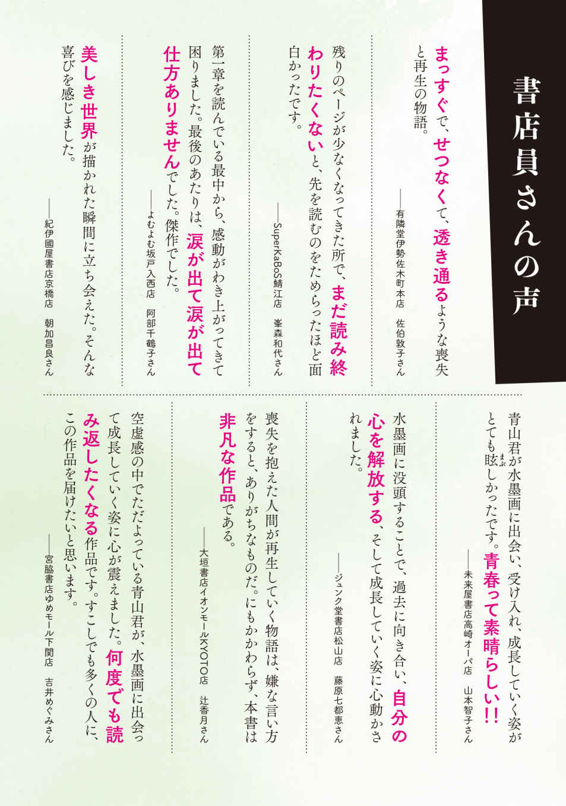
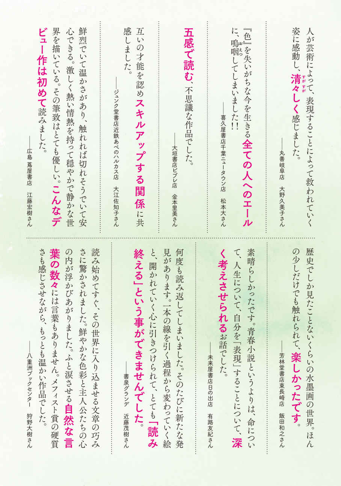
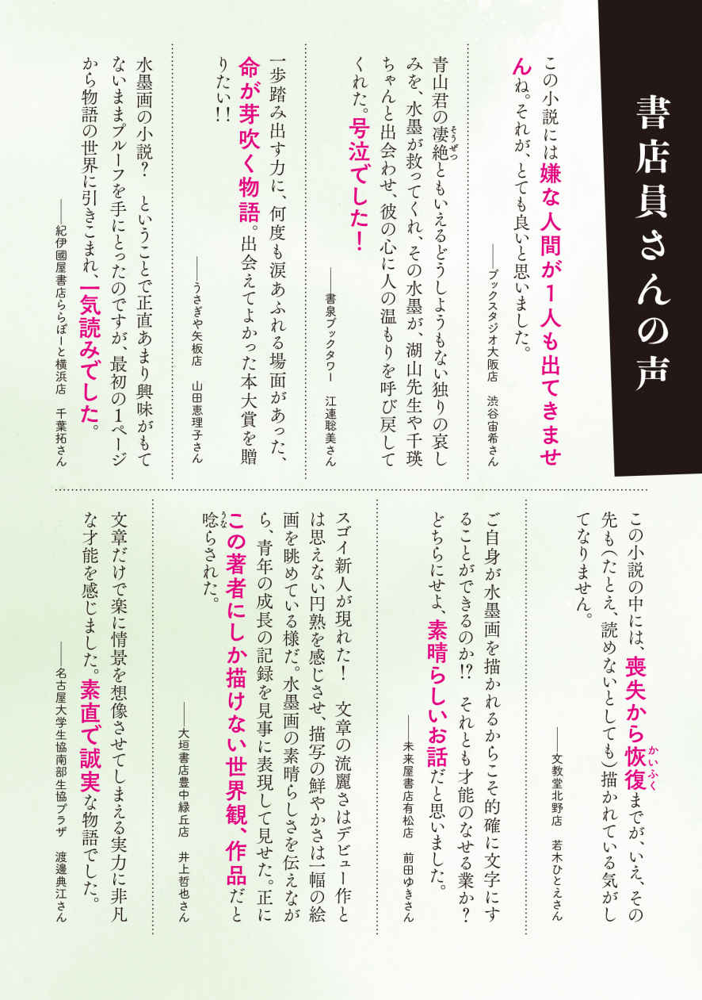
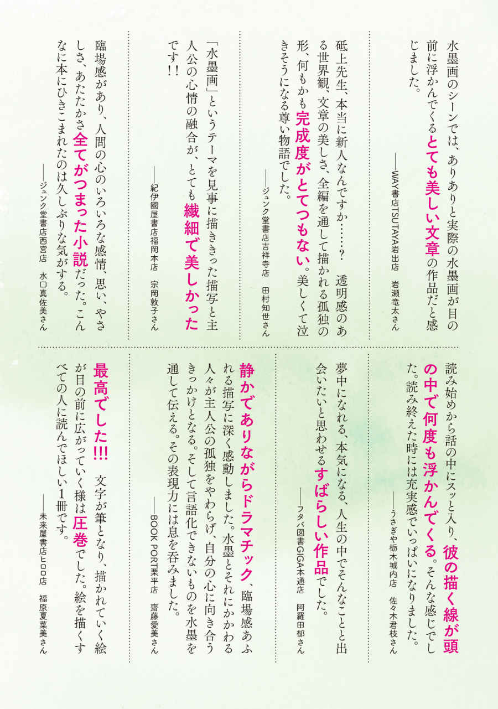
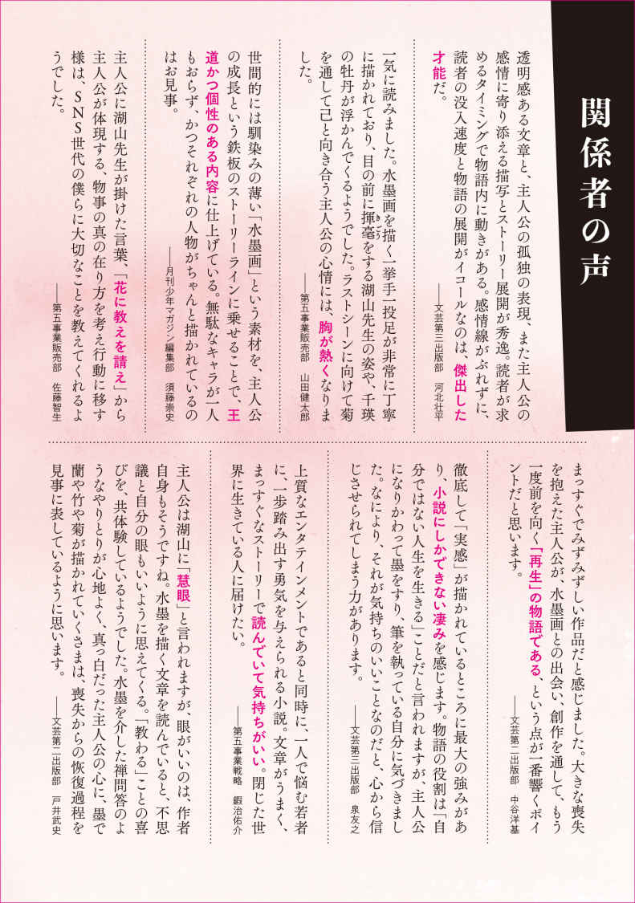
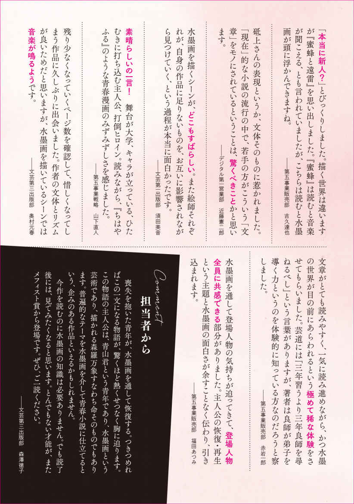
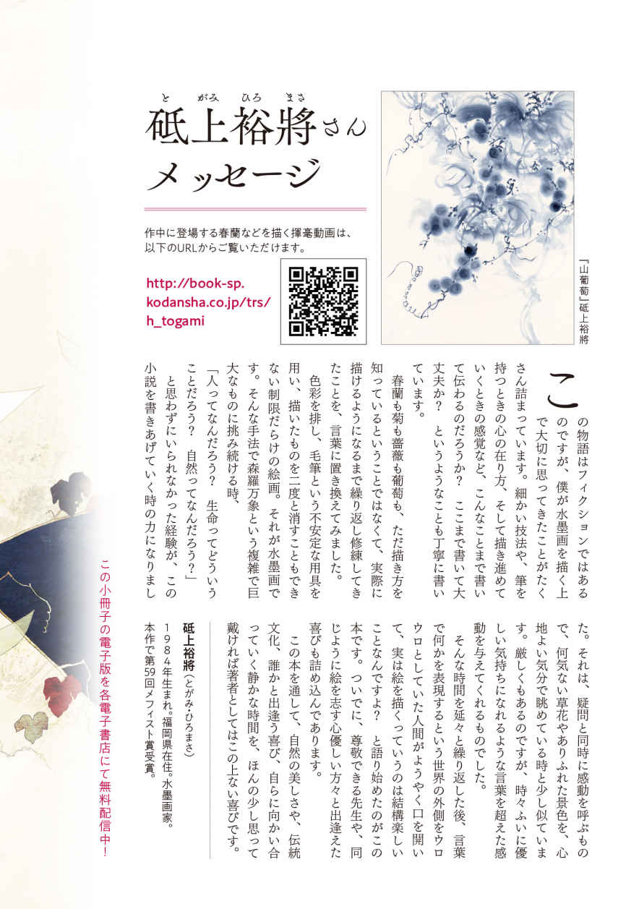